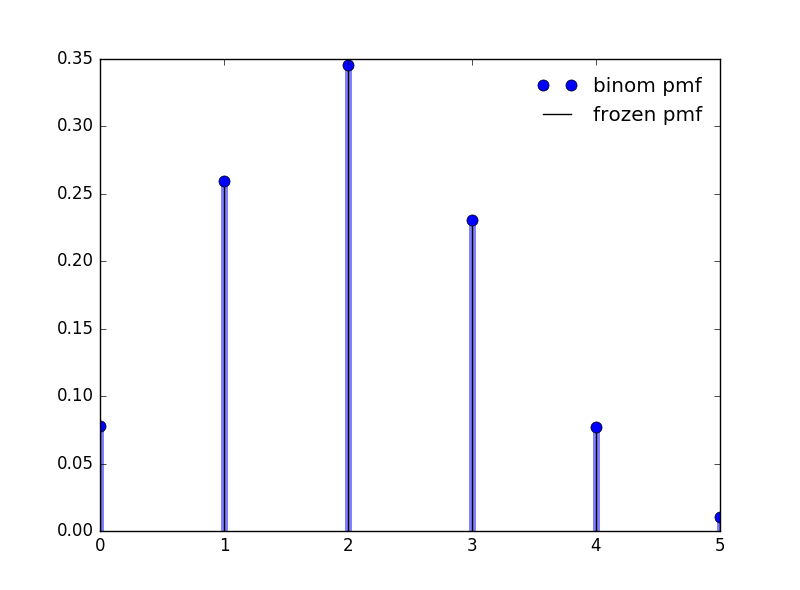

二项随机变量
1 伯努利随机变量和二项随机变量
假定一个实验，其结果可以分为成功或者失败。如果我们在试验的机故宫是成功时令\(X=1\)，而在试验的结果是失败时令\(X=0\)，那么\(X\)的概率质量函数是：
\begin{eqnarray} \label{eq:1} p(0)&=&P(X = 0) = 1-p \\ p(1)&=&P(X = 1) = p \end{eqnarray}其中\(p,0\leq p \leq 1\)是试验的结果为成功的概率。
随机变量\(X\)成为伯努利随机变量，如果其概率密度函数由式(\ref{eq:1})给出. 现在我们推广伯努利随机变量。
假定做了\(n\) 次试验，其中每次结果成功的概率为\(p\)，失败的概率为\(1-p\)，如果以\(X\)代表出现在\(n\)次试验中成功的次数，那么\(X\)称为具有参数\((n,p)\)的二项随机变量，其概率质量函数为：
\begin{equation} \label{eq:2} p(i) = \binom{n}{i}p^{i}(1-p)^{n-i}, i = 0,\ldots ,n \end{equation}可以通过二项式定理验证，这些概率加起来是1：
\begin{equation} \label{eq:3} \sum_{i=0}^{n}p(i) = \sum_{i=0}^{n} \binom{n}{i}p^{i}(1-p)^{n-i} = (p + (1-p))^{n} = 1 \end{equation}2 性质
接下来我们讨论二项分布的性质，先看期望和方差。
首先我们注意到：
\begin{equation} \label{eq:4} E[X^{k}] = \sum_{i=0}^{n}i^{k}\binom{n}{i}p^{i}(1-p)^{n-i} \end{equation}利用恒等式：
\begin{equation} \label{eq:5} i\binom{n}{i} = n\binom{n-1}{i-1} \end{equation}可得：
\begin{eqnarray} \label{eq:6} E[X^{k}]&=& np \sum_{i=1}^{n} i^{k-1}\binom{n-1}{k-1}p^{i-1}(1-p)^{n-i} \\ &=& np \sum_{i=1}^{n} (j+1)^{k-1} \binom{n-1}{j}p^{j}(1-p)^{n-1-j} \\ &=& npE[(Y+1)^{k-1}] \end{eqnarray}其中\(Y\)是一个\((n-1,p)\)的二项随机变量。在上面的式子中令\(k=1\)，可得：
\begin{equation} \label{eq:7} E[X] = np \end{equation}即如果每次试验成功的概率为\(p\)，那么\(n\)次独立重复试验的成功次数的期望等于\(np\). 令式 (\ref{eq:6})中的\(k=2\)，结合二项随机变量的期望公式，可得：
\begin{equation} \label{eq:8} E[X^{2}] = np E[Y+1] = np [(n-1)p +1] \end{equation}结合 式 (\ref{eq:7})，有：
\begin{equation} \label{eq:9} \mathrm{Var}(X) = E[X^{2}] - (E[x])^{2} = np[(n-1)p + 1] - (np)^{2} = np(1-p) \end{equation}综上可得结论：如果\(X\)是一个参数为\(n,p\)的二项随机变量，那么：
\begin{equation} \label{eq:10} E[X] = np \qquad \mathrm{Var}(X) = np(1-p) \end{equation}关于二项分布还有一个很重要的结论：
如果\(X\)是一个参数为\(n,p\)的二项随机变量，其中\(0 < p < 1\)，那么当\(k\)从\(0\)到\(n\)时，\(P\{X=k\}\)一开始单调递增，然后一直单调递减，当\(k = \lceil (n+1)p \rceil\)时取的最大值。
为证明这个命题，我们考虑\(P\{X=k\}/P\{X=k-1\}\)，对于给定的\(k\)，判定其与\(1\)的大小关系。
\begin{eqnarray} \label{eq:11} \frac{P\{X=k\}}{P\{X=k-1\}}&=&\frac{ \binom{n}{k}p^{k}(1-p)^{n-k} }{\binom{n}{k-1}p^{k-1}(1-p)^{n-k+1}} \\ &=& \frac{(n-k+1)p}{k(1-p)} \end{eqnarray}因此\(P\{X=k\} \geq P\{X=k-1\}\)，当且仅当:
\begin{equation} \label{eq:12} (n-k+1)p \geq k(1-p) \end{equation}等价于\(k\leq (n+1)p\)
注意上面的证明过程告诉我们了一种递归的计算二项分布的方法。
3 例子
针对上面的例子。使用python画出二项分布的pmf图。我使用 scipy.stats 提供的 binom 函数。
from scipy.stats import binom import numpy as np import matplotlib.pyplot as plt fig,ax = plt.subplots(1,1) n,p = 5,0.4 x = np.arange(binom.ppf(0,n,p),binom.ppf(1,n,p)) ax.plot(x, binom.pmf(x, n, p), 'bo', ms=8, label='binom pmf') ax.vlines(x, 0, binom.pmf(x, n, p), colors='b', lw=5, alpha=0.5) rv = binom(n, p) ax.vlines(x, 0, rv.pmf(x), colors='k', linestyles='-', lw=1,label='frozen pmf') ax.legend(loc='best', frameon=False) plt.show()
其概率质量函数如图1 所示。

图 1: 二项分布(5,0.4)的概率质量函数